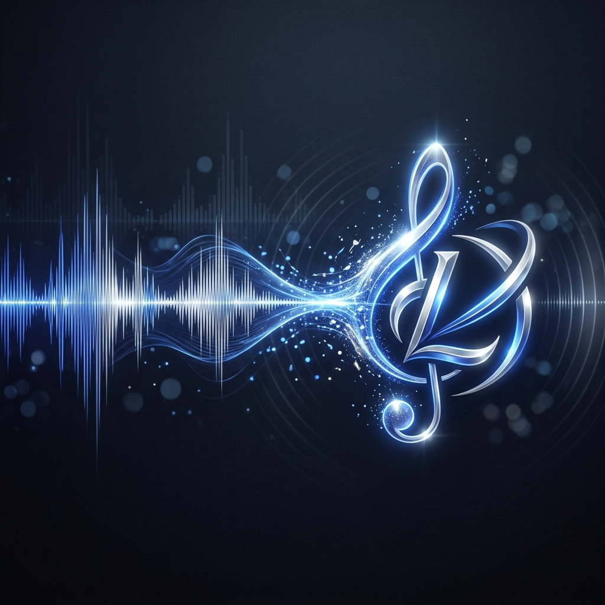

Sonic Branding at Scale: How DeepMind's Lyria Model is Revolutionizing Audio Ads

In a world where everyone is looking at their phones, the brands that "sound" the best are the ones that stick. Most businesses focus 100% on their visual logo, but they completely ignore their "sonic logo." Lyria is the tool that makes high-end audio branding accessible to every SMB on the planet. (DeepMind Lyria)
What is Sonic Branding?
It’s the signature sound that people associate with your business—think of the Netflix "ta-dum" or the Intel chime. Usually, these sounds cost thousands of dollars and months of studio time. Lyria allows us to generate these unique audio assets in seconds, ensuring your brand has a consistent "voice" across podcasts, social media ads, and phone systems.
Why This Matters for Your Business
At Kemper Design Services, we believe that a brand is a multi-sensory experience. If your ad looks like a million bucks but sounds like a stock track from 2012, you're losing authority. Lyria allows us to build custom, secure (via SynthID), and emotionally resonant audio assets that are uniquely yours.
Trending Tasks & Capabilities
- AI-Generated Jingles: Creating short, catchy brand themes that fit your business personality.
- Dynamic Audio Ads: Generating thousands of variations of an ad to see which one resonates best with your audience.
- SynthID Watermarking: Protecting your brand’s audio assets so they can be identified and verified.
- Atmospheric Soundscapes: Building background music for your physical store or website that matches your visual aesthetic perfectly.
The ROI: Memory Retention
Audio is processed faster by the human brain than visuals. A strong sonic identity increases brand recall by up to 80%. By using Lyria to scale your audio branding, you're not just making "noise"—you're making an impression that lasts.